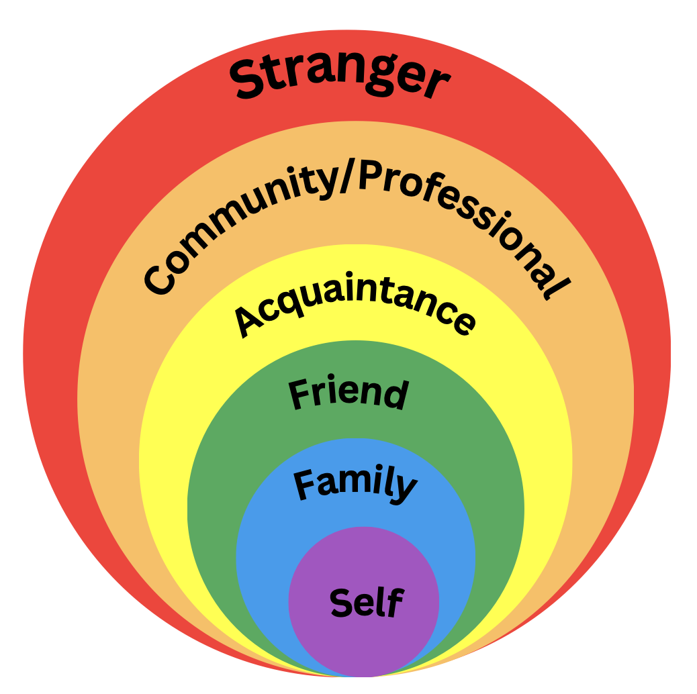

🟣 Unit 2: Social Circles
Everyone has different relationships with different people.
In this unit, we will learn who belongs in our circles and how we interact with different people.
⭕ What Are Social Circles?
A social circle shows how close we are to different people in our lives.
- 🟣 Center Circle: Me
- 💙 Inner Circle: People closest to me
- 💚 Friend Circle: Friends and classmates
- 💛 Community Circle: People who help me
- ⚪ Stranger Circle: People I do not know

⭐ Skills We Practice
- Understanding relationships
- Knowing who we can trust
- Respecting personal boundaries
- Making safe choices
- Communicating with others